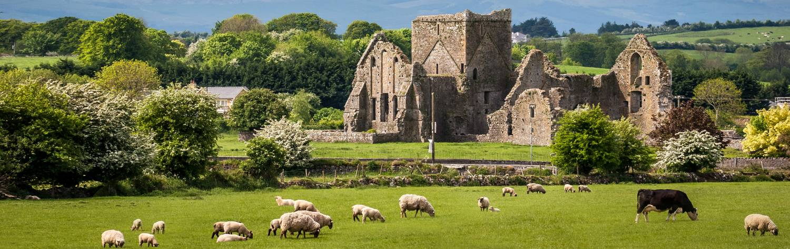

Few countries on Earth exert a hold quite like Ireland, where romance, history and
spirituality suffuse the air, and where the people are always quick to offer a helping hand
or a timeless bit of native wit. From Celtic myths to the artifacts of early Irish monks,
to the lives of brave and dedicated patriots, Ireland is a country where stories come alive
and where adventures are waiting to be made. From the bustling streets of Dublin and the charming
cafes and chic stores of Belfast, to the windswept wilds of its gorgeous west coast, every
day in Ireland will make you feel as if you’ve been transported to the land of your dreams.
There is a charm to the everyday in endearing Eire. Many visitors find their favorite
activities include walking the streets of a country town or spending an evening sipping Guinness
and tapping their feet to traditional Irish bands at the local pub. However, Ireland does
offer a number of notable highlights, and the following places are, simply put, must-sees:
1.Dublin, the social, cultural and political capital of Ireland, is one of the
great cities in Europe and the home to a wide and diverse array of sights, sounds
and activities. Gaze upon the magnificent 1,200-year old gospel texts of the Book of
Kells at Trinity College, enjoy a tour of the world-renowned Guinness factory on the
banks of the Liffey, or shop ’til you drop at the richly varied stalls and storefronts
of Grafton Street. However you choose to spend a day in Dublin, you can be sure it will
unforgettable.
2.Fronting the pounding Atlantic and marking the western edge of Ireland, the Cliffs
of Moher in County Clare are among the most dramatic sea-cliffs in the world: a transcendent
and powerful reminder of the awesome force of nature. The boldest among you will want to
climb to the top of O’Brien’s Tower, where you’ll be rewarded with sweeping views over Galway
Bay – and the pulsing surf of the sea pummeling the coast nearly 700 feet below.
3.Belfast, the vibrant capital of Northern Ireland, is a living testament to the sometimes
violent, always riveting history of the north of Ireland. Check out the stirring Albert
Memorial Clock and the ornate and imposing Belfast City Hall, or learn more about the
city’s distinguished shipbuilding past at the Titanic Belfast museum – a fascinating interactive
journey ‘aboard’ the world’s most famous passenger ship, on the site of its 1909 construction.
